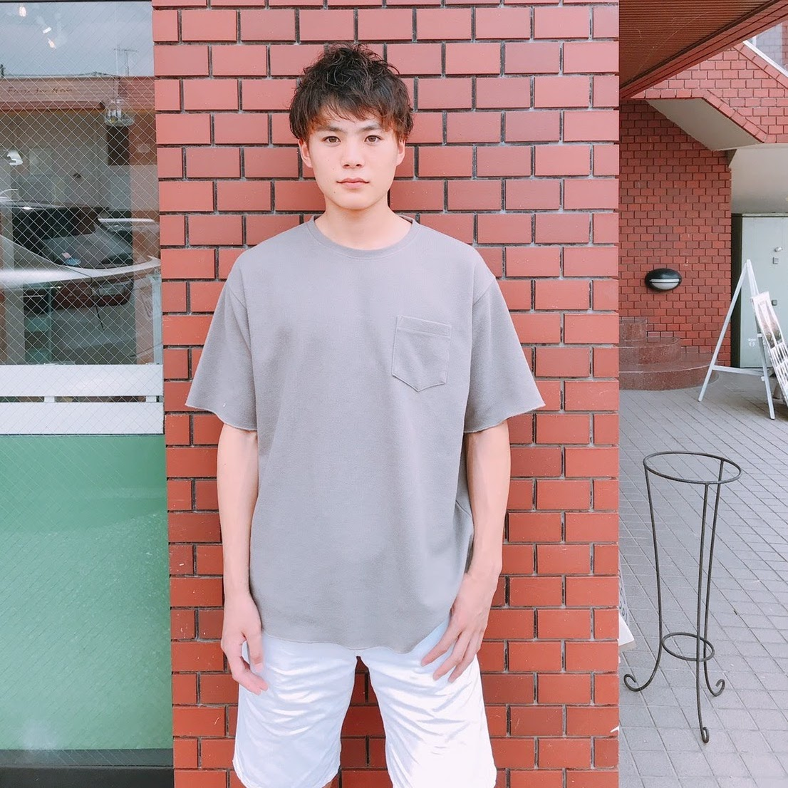
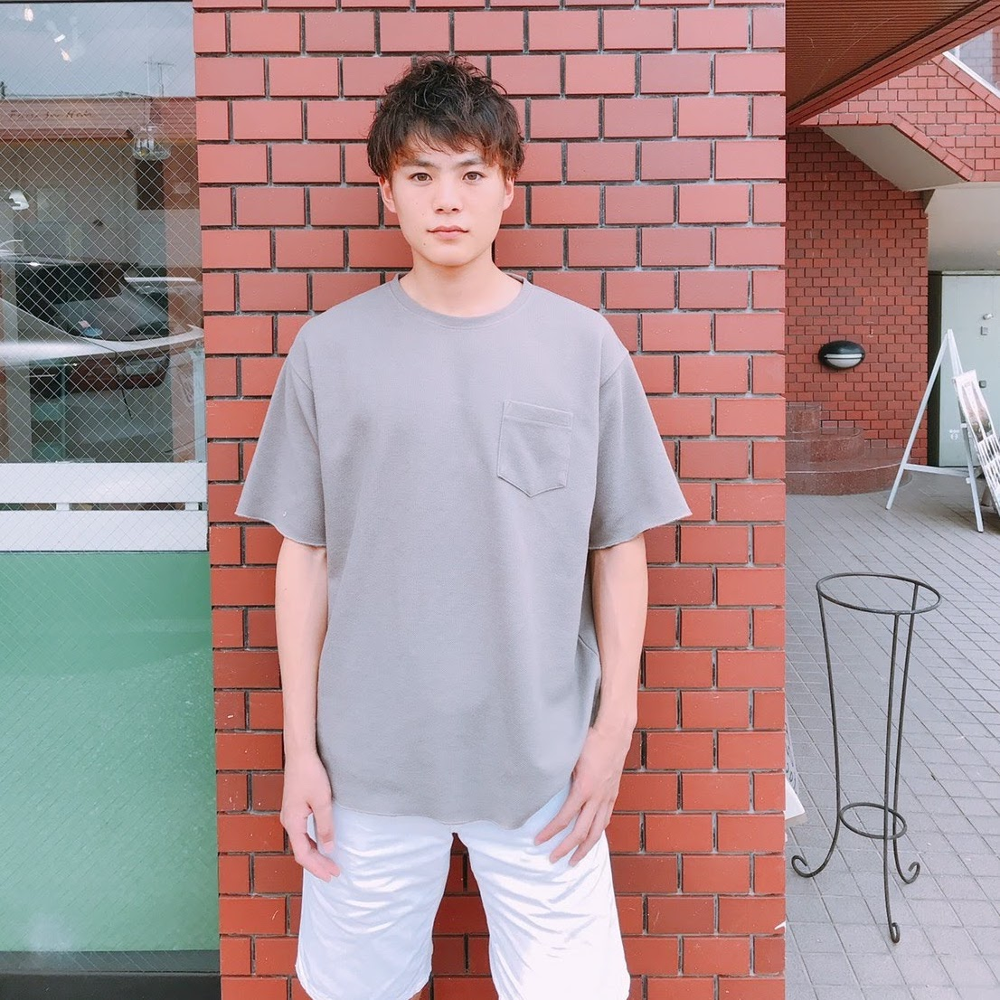
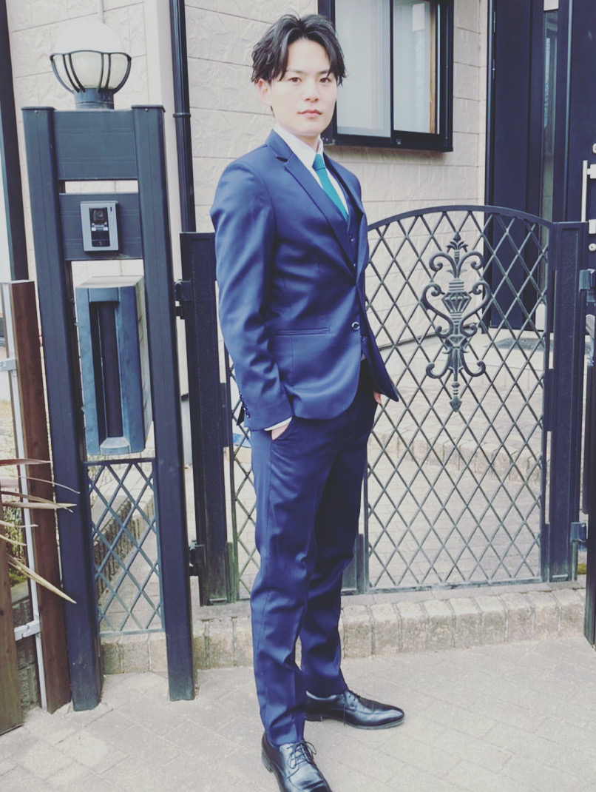
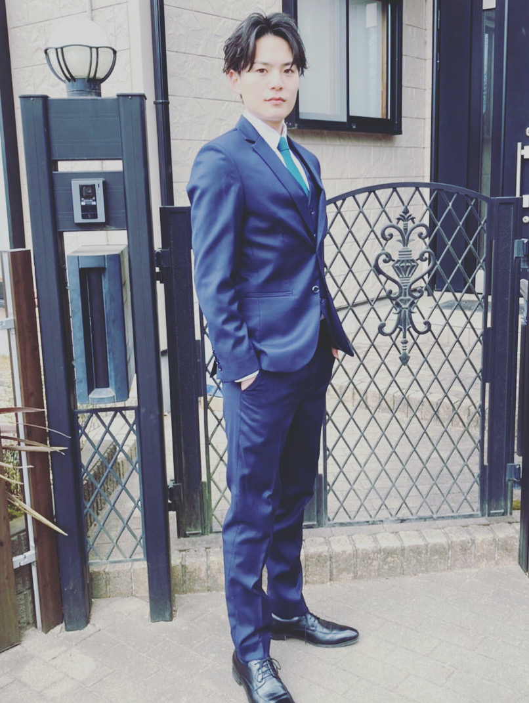
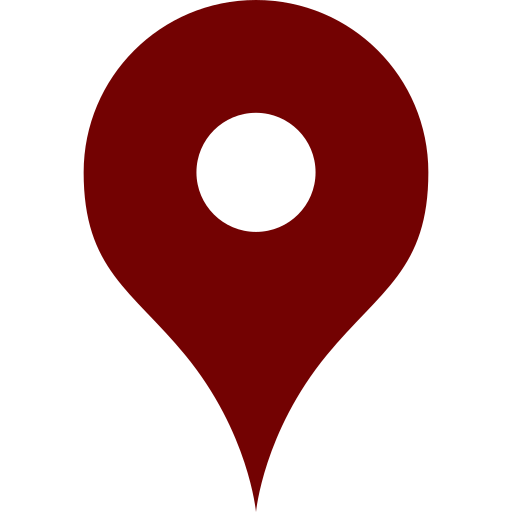

慶應義塾大学法学部政治学科に入学。高校ではサッカーしかやってこなかった不安から、留学や会計士などを模索。しかし、今までの人生を振り返ったときに全て受け身で決められてレールを歩んできた。そのため、なかなか決めらないでいたが、友達の姉におすすめされたベトナムでの海外インターンに挑戦することを決意。そこで、多くのことを学び自分の視野を広げるという大学生活での目標を定めて、長期インターンを行うことに。様々な人と出会い自分の価値観の広がりや成長が著しいものとなった。

 

大舘 千樹
I'm a keio university student
自己紹介
About
 

大舘千樹（ODATE KAZUKI）
- 2000年4月26日
- 21
-  埼玉県所沢市東狭山ヶ丘5-899-36
- 筋トレ、サウナ、サッカー
- 慶應義塾大学法学部政治学科
- 堤林剣研究会
- kazutarou.0426@icloud.com
- 090-5775-2268
強み
strength
-
1. 調和性
-
2. 回復志向
-
3. 達成欲
-
4. 公平性
-
5. 内省
HTML&CSS90%
WordPress90%
デザイン(Adobe XD, Figma)90%
PHP (Laravel)70%
学生時代に頑張ったこと
私は人材紹介の学生企業にて法人営業の仕事に注力し、売上No.1を獲得した。当初アポ獲得件数は他の営業部メンバーと比較して平均以上の成果を残したものの、成約率に大きな課題があった。そこで、上司への営業同行を通して自身との比較分析をしたところ、顧客のニーズを引き出すだけのヒアリングスキルの欠如が判明し、以下の２点の施策を導入。1つ目に、セミナーやイベントなどで社内外含めて100人の営業マンにアプローチをする。その中で、トークスキルや事前準備の方法等あらゆるノウハウを吸収した。2つ目に、自身が蓄積したノウハウを活用できる形まで落とし込み実践を繰り返した。具体的には、訪問前に想定されるお客様からの課題やニーズを自分なりに仮説を立ててから臨んだ。その結果、成約率は40%→70%まで向上し営業部でトップの成績を収めることができた。このインターンの経験によって徹底的に分析し、修正し続けることを学んだ。


ありたい姿
Vision
関わる人の最上幸福の実現
人によって幸せの形が異なっている中で、個々人と向き合い、その人たちの幸せの実現に貢献したい。まず、自分がこれを実現したい理由は二つある。第一に、他の人の助けをして喜ぶ顔を見ることにやりがいを感じるから。第二に、今までいろんな方に支えられてここまで頑張ってこれたため、彼らに対して恩返しをしたいという強い思いがある。ここで最大ではなく、最上にした理由についても説明しておく。ジュレミ・ベンサムの最大多数の最大幸福は快楽から苦痛を引いた合計値が最大になっていれば良いという考えで、社会の快楽の総量が最大になるように行動することが道徳的に正しいと言われている。 しかし、トロッコ問題で知られているように5人を救うか1人を救うかと問われた時、この考えだと5人を救うという考えになってしまう。私は誰もが幸せになれる最上の幸福の実現をしたいという思いから『関わる人の最上幸福の実現』をビジョンにした。
経歴
experience
-
2019年4月 - 現在
慶應義塾大学 法学部 政治学科
大学では法学部政治学科に入学、法学や政治だけを学ぶだけでなく、様々な分野の勉強をしている。三年生から所属し始めたが堤林剣研究会という西洋政治思想を学ぶゼミで、ゼミ代表として取り組んでいる。
-
2016年4月 - 2019年3月
慶應義塾志木高等学校
高校受験で慶應義塾大学の附属高校である私立に入学し、3年間勉強と部活を両立させた。サッカー部に入っていた生活の中心がサッカーになっていたものの、一生付き合っていくであろう仲間との出会いを経験した。高校三年生の時にはミスター志木に選ばれ、部活の同期も自分ごとのように喜んでくれた。
-
2013年4月 - 2016年3月
狭山ヶ丘中学校
中学校は地元の公立で3年間を過ごした。サッカースクールに通いながら、部活動では陸上部で長距離をしていた。受験勉強は中学2年の夏から始めたが、第一志望への合格の可能性も限りなく低い中、最後まで諦めずにやり続け第一志望に合格することができた。
-
2020年4月 - 現在
SDB株式会社
株式会社SDBではエンジニアのインターンとして働き始めた。その中で、HP制作や勤怠システムの開発に従事した。インターン生1期生として入社したが、20名ほどの組織へと拡大していった。その中でインターン生代表を務めることになり、現在はインターン制度の運営や採用をメインで行っている。
-
2019年9月 - 2020年8月
株式会社Builds
人材紹介の学生企業で長期インターン生として法人営業を担当した。 がむしゃらに取り組み、約6ヶ月で営業部一位を達成し、営業部長に昇進。そこでチームとして成果を出すべく、様々な施策を実行し成約率向上に寄与した。約1年間続けたが、裁量権高く多くのことを学ぶことができた。
-
2019年8月 - 2019年9月
ベトナム海外インターン
ベトナムのホイアンで約15日間かけてベトナム人やチームを巻き込みながら、日本語学校の売り上げをあげるべく、ヒアリングから実行までの任せていただいた。このベトナムでのインターンがターニングポイントになり様々なことにチャレンジするようになる。